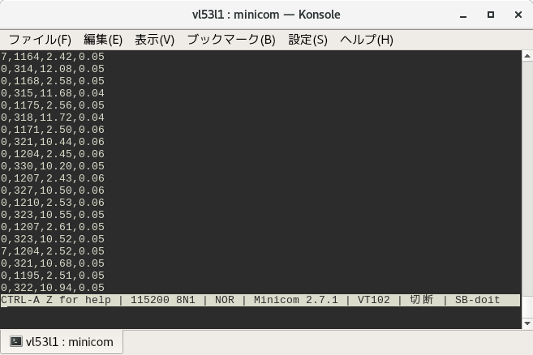
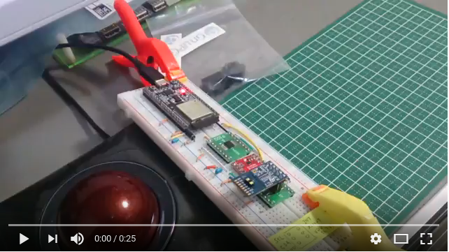

VL53L1X is a ST's new TOF(time of flight) sensor. ST gives its driver and API library with the dual license. See ST's page for detail. Although that code is for the STM32 platforms primarily, they are written with the highly modular manner and possible to be used with other platforms.
ESP-IDF build system has several ways to import such external libraries. This article is a simple example of one of them. The source code I've written is pushed on my github as esp32-vl53l1x-test.
When something are built with ESP-IDF, it scans some directories and looks for component.mk files. It also read those files and determines what to do.
Here is the component.mk file in my esp32-vl53l1x-test/main directory.
STM32CUBEEXPANSION_53L1A1 = symlink-STM32CubeExpansion_53L1A1_V1.0.0
COMPONENT_SRCDIRS := . \
$(STM32CUBEEXPANSION_53L1A1)/Drivers/BSP/Components/vl53l1x
COMPONENT_ADD_INCLUDEDIRS = \
$(STM32CUBEEXPANSION_53L1A1)/Drivers/BSP/X-NUCLEO-53L1A1 \
$(STM32CUBEEXPANSION_53L1A1)/Drivers/BSP/Components/vl53l1x \
$(STM32CUBEEXPANSION_53L1A1)/Projects/Multi/Examples/VL53L1X/SimpleRangingExamples/Inc
CFLAGS += -Wno-unused-variable -Wno-maybe-uninitialized -DI2C_HandleTypeDef=int
The file path is relative to main/ itself. The definition of COMPONENT_SRCDIRS can be read as '. ./symlink-STM32CubeExpansion_53L1A1_V1.0.0/Drivers/BSP/Components/vl53l1x'. The build system adds these directories as the directory which has sources to be compiled. If you symlink the root directory of ST's driver to symlink-STM32CubeExpansion_53L1A1_V1.0.0, the sources in Drivers/BSP/Components/vl53l1x of ST's source are compiled with.
COMPONENT_ADD_INCLUDEDIRS is the list of directories which are added as the search paths for the include files. CFLAGS is the option flags during compiling. In this example, it adds a few -W flags to avoid failure with warnings and gives a missing type definition. Thus I could use ST's source tree without modifying. Easy enough, isn't it?

The test circuit is using ESP32 I2C1(not I2C0), IO32(SDA), IO33(SCLK) and pretty simple except 3V3 - 2V8 level converter. I'm not sure if the level converter is deadly needed.

The test itself is a simple use of ST's API. With switching ROIs(region of interest), the sensor can detect 'edge' or 'slope' somehow.
